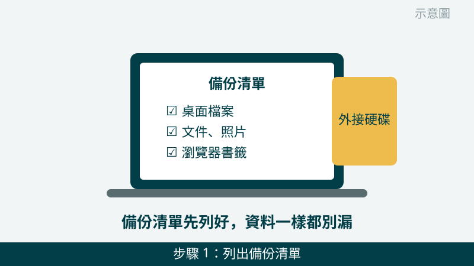
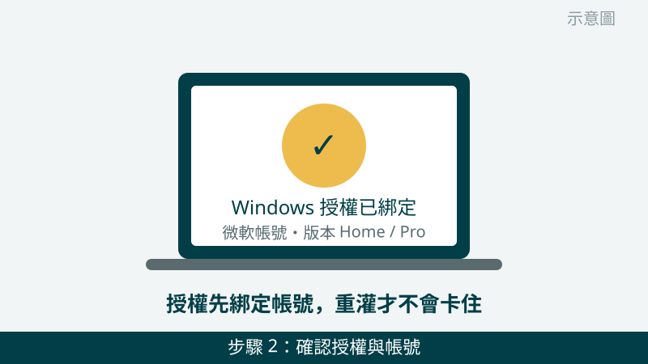
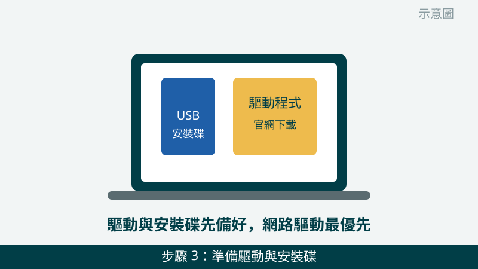
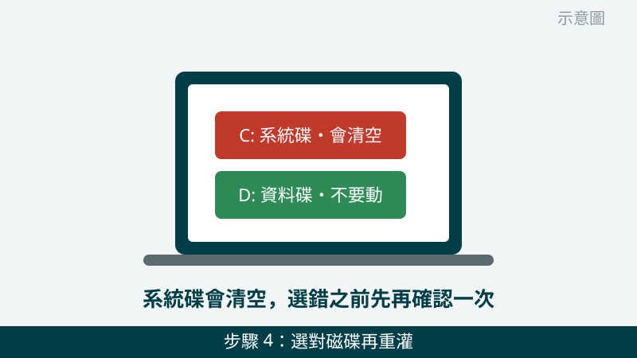
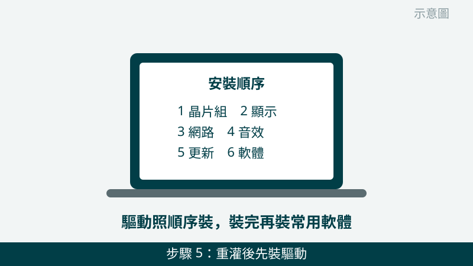
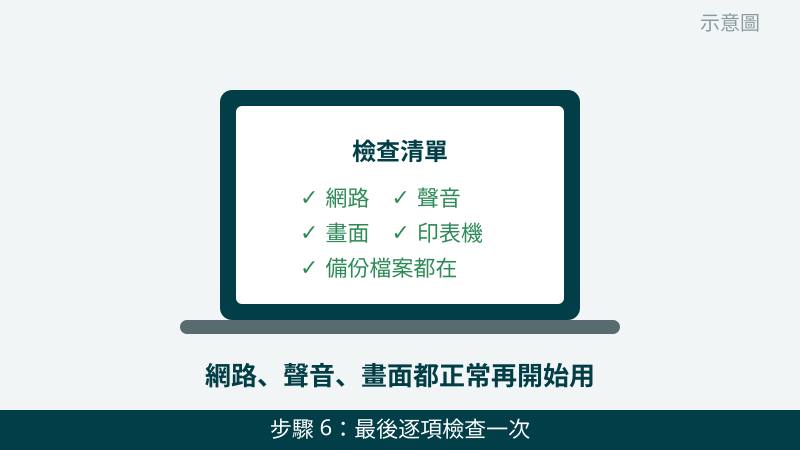

電腦越用越慢、開機要等很久、系統常常出錯，很多人第一個想到的就是重灌。重灌本身不可怕，可怕的是沒備份就動手。重灌會把系統碟裡的 Windows 和程式全部清空，桌面、文件、照片如果還在系統碟裡，沒備份就真的不見了。
原則：「備份、授權、驅動」三件事先準備好，重灌才不會卡關。備份是保住資料，授權是重灌後能正常啟用，驅動是重灌後能上網、有聲音。照下面 6 步走，一步一步來就好。
重灌前先傳給我們看
把您的電腦型號和想重灌的原因傳 LINE 給我們，我們陪您確認備份清單和授權狀況，真的需要重灌再約時間。先免費評估，確認後再預約。
台中電腦重灌 Windows 自救檢查清單（由簡到難）
- 1. 先列出備份清單，重要資料先搬出來。請先把桌面、文件、照片、影片都複製到外接硬碟或雲端；瀏覽器的書籤和密碼、LINE 的聊天記錄備份、郵件裡的附件也別漏掉。怎麼確認：備份完把外接硬碟拔下來，換一台電腦打開看一次，檔案打得開才算真的備份好。 這一步卡住了嗎？需要協助，可以傳 LINE 聯繫我們，我們會陪您看、幫您確認。

示意圖（非官方截圖） - 2. 確認 Windows 授權與帳號。重灌前請先確認 Windows 是數位授權、而且已經綁定您的微軟帳號（設定→系統→啟用可以看到），版本是 Home 還是 Pro 也記下來；Office 或其他付費軟體的授權序號、帳號密碼也先抄好。怎麼確認：授權有綁定帳號，重灌後登入同一個帳號通常就能自動啟用；沒綁定就重灌，之後可能要重新買授權。 做到這裡不太確定也沒關係，把畫面拍下來傳 LINE 給我們，我們會陪您看、幫您確認。

示意圖（非官方截圖） - 3. 準備驅動程式與安裝碟。請先到筆電或主機板品牌官網，用型號下載驅動程式，特別是網路驅動要先準備好（沒網路就什麼都裝不了）；再準備一支 8GB 以上的 USB 隨身碟做安裝碟。怎麼確認：驅動先存在另一支隨身碟或手機裡，不要只放在要重灌的那台電腦上。 這一步做完還是不放心嗎？需要協助，可以傳 LINE 聯繫我們，我們會陪您看、幫您確認。

示意圖（非官方截圖） - 4. 重灌時選對磁碟，系統碟會清空。重灌會把系統碟（通常是 C 槽）裡的 Windows 和程式全部清空，這是正常的，但請務必確認您選的是系統碟，不要誤選到放資料的 D 槽。怎麼確認：安裝畫面出現磁碟清單時先停下來，核對容量和磁碟代號，不確定就先拍照問我們，不要急著按下一步。 這一步卡住了嗎？需要協助，可以傳 LINE 聯繫我們，我們會陪您看、幫您確認。

示意圖（非官方截圖） - 5. 重灌後先裝驅動，再裝常用軟體。重灌完成後請照順序裝驅動：晶片組、顯示、網路、音效，再跑一次 Windows Update；驅動都正常了，再裝瀏覽器、Office、LINE 等常用軟體，最後才把備份的檔案搬回來。怎麼確認：裝置管理員裡沒有黃色驚嘆號，網路、聲音、畫面都正常，才算裝好。 做到這裡不太確定也沒關係，把畫面拍下來傳 LINE 給我們，我們會陪您看、幫您確認。

示意圖（非官方截圖） - 6. 最後逐項檢查一次再開始用。請逐項測試：能上網、聲音正常、螢幕解析度正確、印表機印得出來，備份的檔案也都在、打得開；防毒與 Windows 更新確認有開啟。怎麼確認：每一項都打勾再開始正常使用，缺哪一項就先處理哪一項，不要將就著用。 這一步做完還是不放心嗎？需要協助，可以傳 LINE 聯繫我們，我們會陪您看、幫您確認。

示意圖（非官方截圖）
出現這些情況，就別再自己試了
- 重灌到一半突然斷電、或安裝畫面卡住不動——請先停手，反覆重開可能讓系統碟更亂
- 硬碟發出「喀喀」異音、檔案莫名損壞——硬碟可能快壞了，請先停手保資料，不要直接重灌
- Windows 授權還沒綁定帳號就重灌，之後可能無法啟用
- 系統碟和資料碟分不清楚，怕選錯磁碟——請先拍照問我們，不要憑感覺按下一步
如果重灌之後還是很慢，或是驅動怎麼裝都有黃色驚嘆號，也建議順手看一下變慢篇和升級篇：有些老電腦慢的原因是硬碟老化或記憶體不夠，重灌只能治標。需要協助，可以傳 LINE 聯繫我們，我們會陪您看、幫您確認。
常見問題
台中電腦重灌 Windows，會不會把 D 槽的資料也刪掉？
只格式化系統碟（通常是 C 槽）就不會動到 D 槽，但重灌時選錯磁碟，資料就真的不見了。所以動手之前，請先把桌面、文件、照片都備份到外接硬碟或雲端，不確定選哪一個磁碟時，先拍照問我們，不要憑感覺按下一步。
重灌 Windows 後沒有網路、沒聲音，怎麼辦？
多半是驅動程式還沒裝。請先到筆電或主機板品牌官網，用型號下載驅動，照晶片組、顯示、網路、音效的順序安裝，網路驅動請優先裝好，有網路之後 Windows Update 也能幫忙補一部分驅動。裝完還是不行，需要協助，可以傳 LINE 聯繫我們，我們會陪您看、幫您確認。
重灌前忘記備份，資料還救得回來嗎？
請先停用這台電腦，不要再寫入新檔案，越早停用，處理的機會越大。重灌後的磁碟請不要再反覆開關機或安裝軟體，盡快把情況傳 LINE 告訴我們，我們會陪您確認接下來怎麼做比較好。
重灌 Windows 要多久？
一般大約 1–3 小時，實際時間要看備份資料有多少、硬碟是 SSD 還是傳統硬碟，以及驅動與基本軟體要裝多少。如果還要備份大量照片、文件，時間會再拉長；需要協助，可以傳 LINE 聯繫我們，我們會先幫您評估。